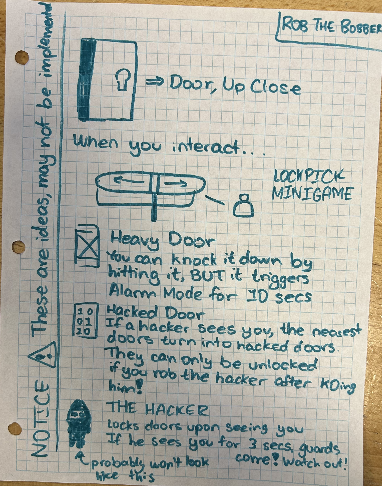
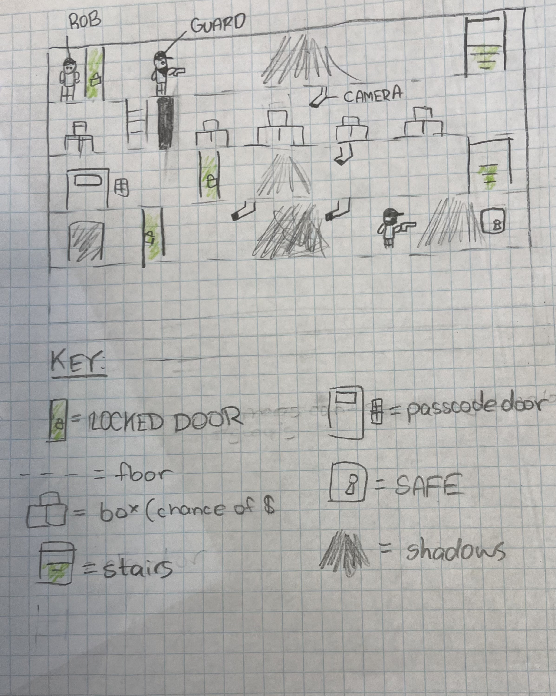

Our game targets all three Accessibility focus areas by having different levels of difficulty for different players, being open minded to change the game based on player feedback, and lastly every level will have guidelines, and everytime a player dies they will get a hint.
+______|____.
_____|____|_.
_____.____|__
____|___.__|_
____________=
(+) ---> Start of Level
(=) ---> End of Level
(-) ---> Floor
(.) ---> Stairs
(|) ---> Door